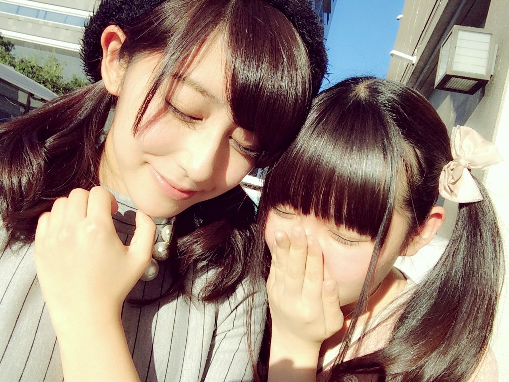
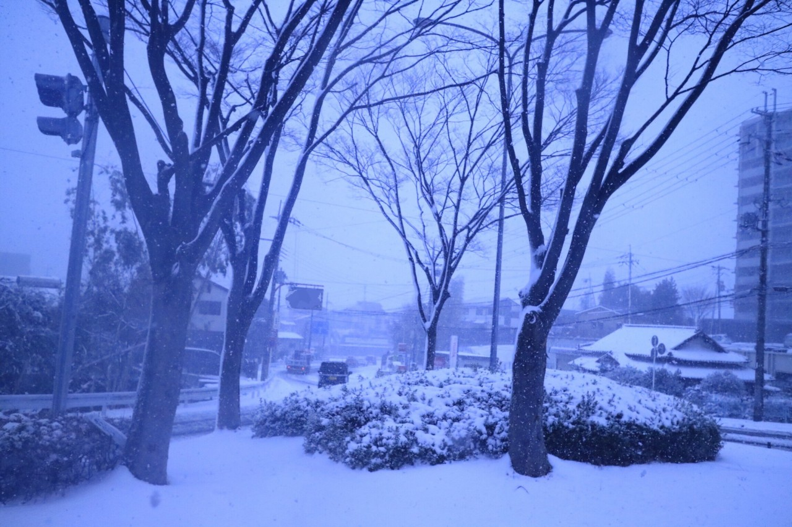

| 2017/01 19 Thu | 斎藤ちはる 月日 |
ちはるーむへようこそ

2年半前(高3)の時の写真を見返していたら
めーちゃんが"ひめたん"だった。
ツインにピンクにリボン。
(私もツインしている...！)
そして年末の紅白のとき。
少しは大人になったかな。
( ¨̮ )( ¨̮ )( ¨̮ )
----------------------------------------♡
#chihashot
京都で撮った雪景色。

この写真は木や雪をメインに
撮っているんだけど
ピントの合わせ方で同じ場所でも
全然違う写真が撮れました◎
実はバスの中で撮った写真。
窓の雪の雫にピントを合わせたら
上の写真とは全く別の写真になった！
私はこっちの写真の方がタイプかな☺︎
最近またどんなカメラ使ってるの〜？
という質問が多いのですが、
私は「Canon EOS M3」という
ミラーレスカメラで撮っています♪
最近のブログのやけに画質の良い写真は
全部このカメラです！
#chihashot も、自撮りも、メンバーとの写真も◎
とってもオススメです〜
写真はいいね〜
----------------------------------------♡
♬ ChihaMusic
「なんでもないや」RADWIMPSさん
お恥ずかしながら今日やっと
「君の名は」を観たのです...
今更感が強いような気もしますが
とても良い映画でした。
良い映画には良い音楽がつきもの！
ということでどの曲も最高でした。
RADさんの曲が流れて涙が...
"君のいない世界にも
何かの意味はきっとあって
でも君のいない世界など
夏休みのない 八月のよう"
この切なさがいい...
例え方が絶妙...
昨日のブログの「四択」に
答えてくださった皆さん有難うございました！
沢山の意見がありましたが
1番多かったのは
①の今のままがいい！
でした( ･ᴗ･ )⚐⚑⚐
長すぎず短すぎず...！
セットしたら目にかからないくらいの
ギリギリの長さ、そして少しシースルーの前髪。
これくらいをキープ出来るように...！
おやすみ
斎藤ちはる